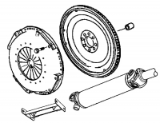

2004 - 2006 Dodge Viper 2010 - 2014 Transmission Conversion Kit
| Part number | 6060 conversion kit |
|---|---|
| Mopar part # | 05013457AA |
| Fits years | 2004-2006 |
| Models | Viper |
| Condition | Brand New, Used |
| Category | Clutch, Propeller Shafts / U-Joints, Transmission |
Description
2004 - 2006 Dodge Viper 2010 - 2014 Transmission Conversion Kit
*BRAND NEW*
This kit consists of all components needed to swap the latest and greatest 2010-2014 TR6060 Viper transmission into a Gen 3 (2004 - 2006) Dodge Viper SRT10 according to SRT engineers. It will NOT work for a 2003 Viper due to the crankshaft position sensor. Parts included are:
05037965AB - 2010 flywheel w/ring gear, MSRP of $448.00
05037963AC - 2010 dual-disc clutch kit w/pressure plate, MSRP of $357.00
06508880AA - 2010 clutch bolts (6), MSRP of $26.70
05037990AA - 2010 drive shaft, MSRP of $365.00
5037263AB - 2010 rear transmission bracket*, MSRP of $34.10
53009181AB - 2010 pilot bearing*, MSRP of $19.00
* Existing 2003 - 2006 bracket can be used but would need the hole slotted rearward by 10mm. Likewise, the existing pilot bearing can be used but is inexpensive enough to simply install a new one as long as you are in there.
Note: The new flywheel will need to have the holes for the crankshaft bolts drilled out to fit the 7/16” flywheel bolts used on the 2003 – 2006 cars. SRT recommends using only Mopar ATF+4 transmission fluid (Mopar Part # 05013457AA) in the TR6060 - not included. Correct fill volume is 3210ml (this is well below the ‘fill plug’ on the side of the case).
Ships in 2 - 5 business days
Archived 2025-11-14 · view original capture
More in Clutch
 Out of stock
Out of stock